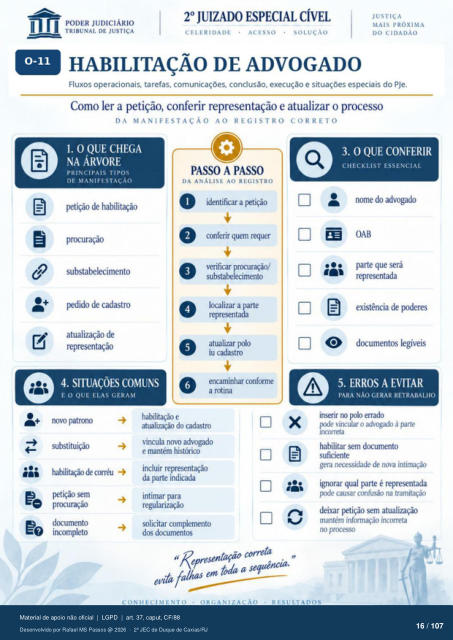

Transcrição automática em português, ainda não revisada. Confira grafia, prazos e termos jurídicos na imagem e no PDF antes de utilizar.
1
HABILITAÇÃO DE ADVOGADO
Fluxos operacionais, tarefas, comunicações. conclusão, execução e situações especiais do PJe. Como ler a petição, conferir representação e atualiz.ar o processo
DA MANIFESTAÇÃO AO REGISTRO CORRETO
1. O QUE CHEGA
NA ÁRVORE
PRINCIPAIS TIPOS
DE MANIFESTAÇÃO
petição de habilitação substabelecimento
de cadastro atualização de
representação
4. SITUAÇÕES COMUNS
E O QUE ELAS GERAM
PASO A PASSO
DA ANALISE AO REGISTRO
O O
O O
6 identificar a Ftição
conferir quem requer verificar prcxuraçào/
substabelecimento Itxalizar a parte
representada atualizar plo
iu cadastro encaminhar cmforme
a rotina novo
substituição habilitação corréu
dcrumento incompleto
habilitação e atualização do cadastro
vincula novo advogado e mantém históricx»
incluir representação da indicada
intimar para regularização
solicitar complemento dcxumentos
x em toda a sequência.
3. O QUE CONFERIR
CHECKLIST ESSENCIAL
nome do advogado OAB
parte que será representada
existência de pderes documentos legíveis
5. ERROS A EVITAR
PARA NAO GERAR RETRABALHO
inserir no plo errado {XXIe vincular o kKivogado à parte
habilitar sem dcwumento gera necessidade de nova intimação
ignorar qual parte é representada p:xie causar confusão na tramitação
deixar Ftição atualização mantém informação incorreta
no
Ver também o infográfico original (página 16)
